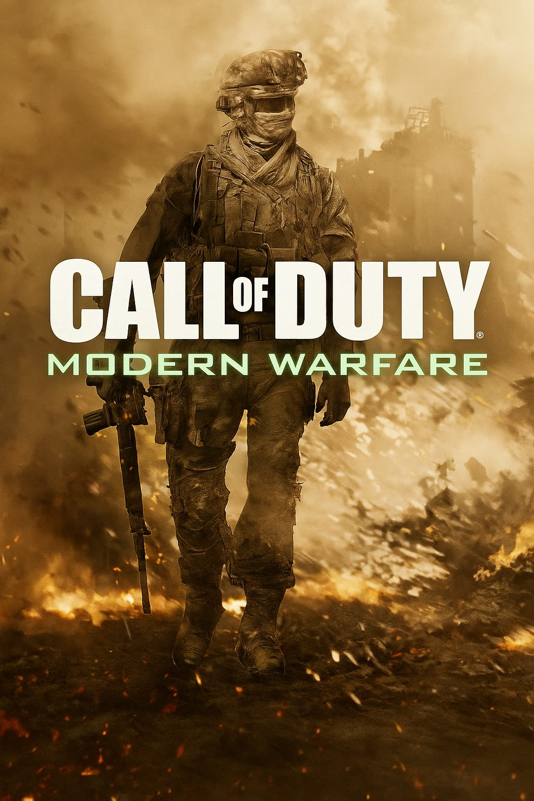
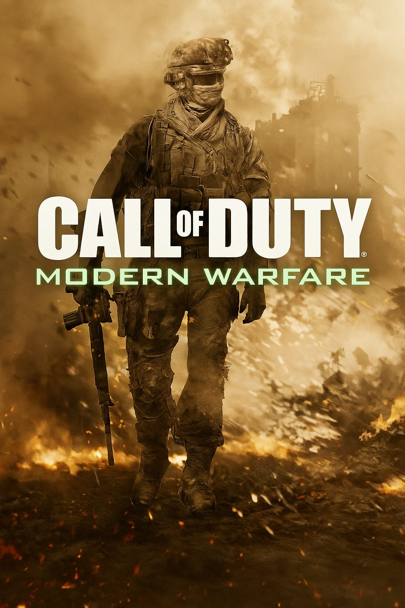
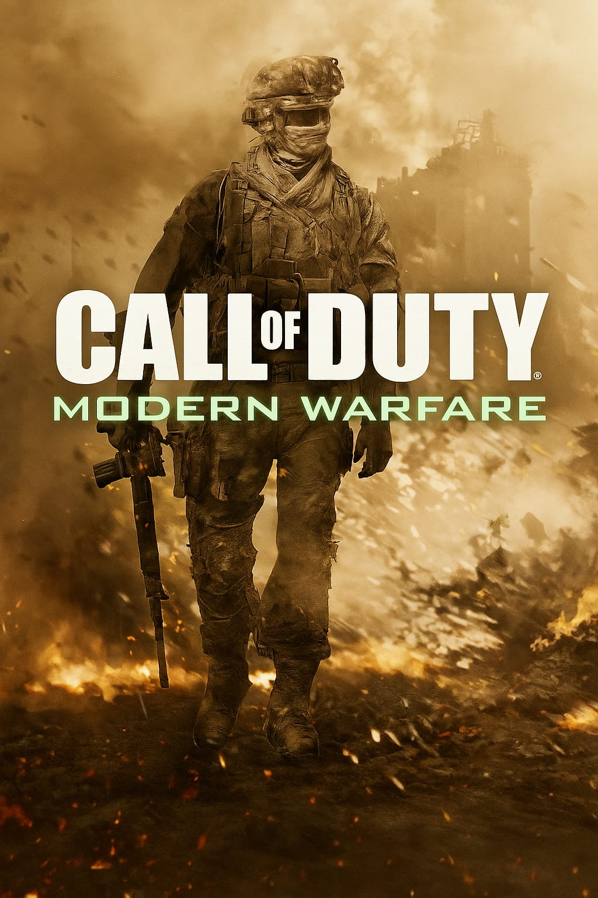
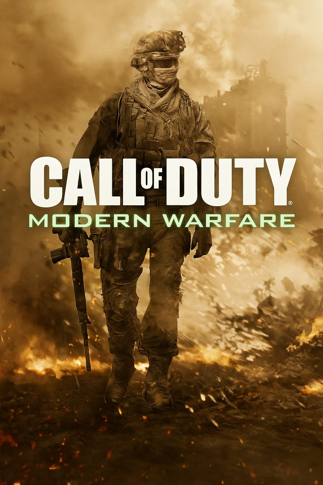

 

1. Grand Theft Auto V: Un juego de mundo abierto donde controlás a tres personajes distintos que viven aventuras criminales en una ciudad ficticia. Podés hacer misiones, manejar autos, volar, y explorar libremente. También tiene un modo online muy popular.
2. Fortnite: Un juego de batalla campal donde 100 jugadores luchan hasta que quede uno solo. Se destaca por su estilo colorido, construcción de estructuras y eventos en vivo. Es gratuito y muy jugado por jóvenes.
3. Call of Duty: Modern Warfare. Un juego de disparos en primera persona con una campaña intensa y realista sobre conflictos militares modernos. Además, su modo multijugador es rápido, competitivo y muy popular en línea.
4. Minecraft: Un juego donde podés construir, explorar, minar y sobrevivir en un mundo hecho de bloques. Tiene un estilo simple pero ofrece mucha libertad. Es ideal tanto para jugar solo como con amigos.
5. Forza Horizon 5: Un juego de autos en mundo abierto ambientado en México. Podés correr, explorar paisajes hermosos, modificar vehículos y competir online. Es uno de los mejores juegos de carreras actuales.